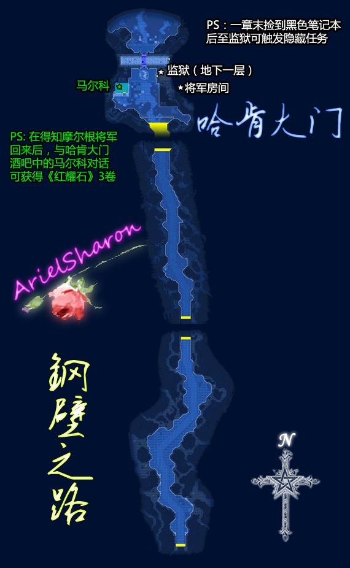
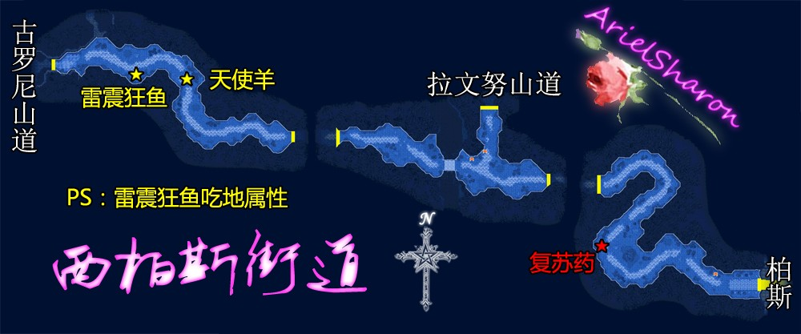
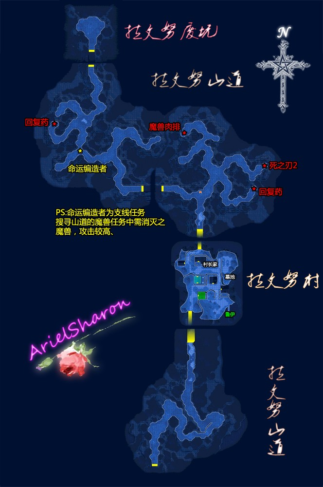
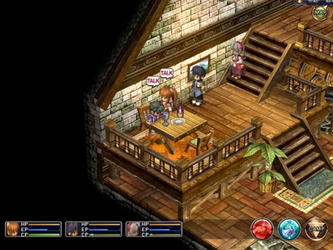
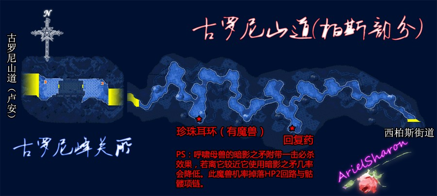
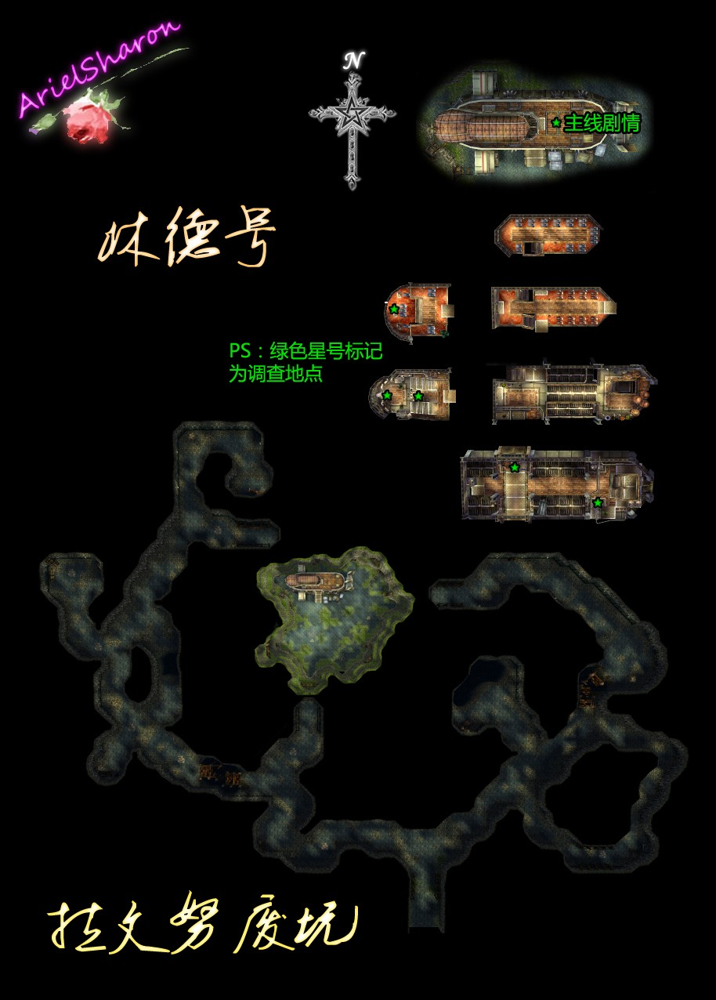

第一章 消失的定期船
洛连特地区
(准备工作)小艾小约前去钟塔后发生剧情，之后众人准备前往柏斯（雪拉入队），去柏斯前请做一些准备工作
☆【料理手册】此时可获得的料理：奶酪薄饼（亚班特酒馆）
【利贝尔通讯】此时去里农杂货铺可购得《利贝尔通讯第二号》，之后的柏斯超市亦能买到（再次强调此书除了消遣和满足收集癖没有任何作用，不买也没什么问题……）
[支线任务]在洛连特游击士协会支部的公告板上出现新任务送亲笔信，
如果在威尔特桥办完手续就不能回来接任务了，此任务还关系到调查熊刺草任务的完成
[支线任务]在艾利兹街道打火爆麻雀收集5个魔兽鸟肉，对一章尽快完成食材任务有帮助。确认准备完毕后，请前往牛奶小街西边的威尔特桥关所
{kind=link}
★【红耀石】与关所巡逻兵哈罗德（此人一直在关所前来回巡逻）对话可得到《红耀石》第2卷。柏斯超市亦有售。
主角一行通过威尔特桥后来到东柏斯街道，在街道途中会发生一小段主线剧情，接着请继续走前往柏斯游击士协会。
{kind=link}
☆【料理手册】此时可获得的料理：花色果冻（柏斯超市）、香酪蛋糕（柏斯超市）、奇味汤（奇尔榭酒馆）、红尾汤（奇尔榭酒馆）、仰天奶酪肉汁烩饭（奇尔榭酒馆、大盘料理）
★【红耀石】柏斯超市有售《红耀石》第1卷和第2卷，之前若错过可购买，1000mira一本，请注意除这2卷外，所有《红耀石》系列都只能剧情获得，错过就没有机会补救了，只能修改出来。
PS:各位童鞋不要忘了去导力工房看看新的回路……虽然偶知道有些童鞋凭着顽强的毅力一直坚持到终章身上还装着序章的回路╮(╯_╰)╭但是在魔法流盛行的FC这实在不是什么好习惯……缺少晶片请去刷羊，不知道羊为何物的请参见本人FAQ综合篇PART3第8问
[支线任务⑴]送亲笔信 BP：2，800mira
此任务需先在洛连特教会接受迪拜恩教区长的委托，到柏斯之后将亲笔信交给伯斯教堂的豪尔斯教区长
[支线任务⑵]收集食物材料 BP：3，800mira，学会大盘料理"王国煎蛋卷"
☆【料理手册】此任务关系到大盘料理"王国煎蛋卷"的获得，想完善料理手册的童鞋请注意了
最迟完成期限：从王国军那里被释放之前
前往安特洛丝餐厅厨房接受格露娜的委托，任务是收集5个魔兽鸟肉。若之前未收集可以去钢壁之路打大鸟旋风巨鹫和鸡蛋头模样的小鹫(钢壁之路暂时还无法进入，若未在洛连特收集鸟肉就只能等主线进行到可以进入钢壁之路时完成了)。
◆主线任务⑴◆定期船失踪事件 BP：5 + 3，6000mira
游击士协会发生剧情后三人需前往柏斯北街区西边的市长官邸（有不少童鞋问过诸如某某市市长官邸在哪里以及某某市工房在哪里这样的问题，话说游戏里有种东西叫小地图╮(╯_╰)╭），之后前往教会寻找女佣，再到超市找到市长。剧情后众人前往钢壁之路，之后请与东北屋门口的士兵交谈，接着到酒馆，与金发青年交谈2次发生剧情后请再前往东北屋将军房间。
★【红耀石】这时与酒吧中的马尔科对话可得到《红耀石》第3卷。

将军房间内发生剧情，之后奥利维尔加入队伍。奥利维尔的战斗力不错，利用这个机会要去一下东柏斯街道和迷雾峡谷做两个任务。
[支线任务⑶]东柏斯街道的通缉魔兽 BP：4，1000mira
最迟完成期限：从奈尔那得到情报，去拉文努村。通缉魔兽出现的地点是从东柏斯街道通往迷雾峡谷方向支道的东南侧。魔兽是帝王蝎和妖后蝎，攻击带毒。(注意，这个任务刚到柏斯时就有了，这时候去打可以节省时间跑路，又有奥利维尔帮忙= =)
PS:东柏斯街道的呼啸母兽会暗影之矛（20%几率即死，即死又称为一击必杀，是无视伤害直接造成对方战斗不能的一种效果，请小心），战胜后几率掉落HP2回路、骷髅项链（防即死），之后某地某宝箱内会出现几个呼啸母兽……觉得有必要防状态的话就打些骷髅项链吧，HP2回路也是不错的
[支线任务⑷]调查熊刺草任务 BP：4，1000mira
最迟完成期限：第二章通过古罗尼峰的关所之前
询问超市的思潘斯老人相关情况（不必需）后去迷雾峡谷采得至少一株熊刺草，然后回来向老人报告即可完成，想要接到这个任务需要完成之前的送亲笔信任务。
{kind=link}
[支线任务⑸]迷雾峡谷的通缉魔兽 BP：5，2000mira
最迟完成期限：在湖畔的旅馆定下房间之前
迷雾峡谷西边沿路走下去会遇到通缉魔兽寒冰至尊和4个会自爆的蛋，寒冰至尊会水系魔法，怕火。
☆【料理手册】此时可获得的料理：地狱极乐锅(暗锅)（迷雾峡谷东边小屋与维姆拉对话选择吃饭，大盘料理）
PS:迷雾峡谷的巨型雪猿几率掉HP2回路
众人前往柏斯，到柏斯后发生剧情，奥利维尔离队（偶向来习惯在到柏斯前直接把他身上装备回路全部扒光……）。之后去市长家发生剧情。
[支线任务⑹]搜寻山道的魔兽 BP：4，1500mira
最迟完成期限：去拉文努村
经过西柏斯街道前往拉文努村，之后找村长了解情况，接着就可以进入废矿的山道了。通缉魔兽防御较高，不过吃即死…… 不放心的话可以用山道中捡到的死之刃2直接解决。


[支线任务⑺]西柏斯街道的通缉魔兽 BP：4，1200mira
最迟完成期限：从王国军那里被释放前
魔兽是雷震狂鱼，会群体电击，附带黑暗效果，吃土属性，也吃即死，该魔兽几率掉落回避2回路。
PS:西柏斯街道可刷羊
【隐藏任务】[支线任务⑻]琥珀之塔的可疑人物 BP：4，2000mira
进入琥珀之塔发生剧情，之后在塔内5层发生剧情战（对手是几只路边小魔兽……不必担心），出塔后任务完成。如果之前任务完美完成，该任务结束回协会报告升到准游击士6级，得到奖励石化之刃。
{kind=link}
{kind=link}
◆主线任务⑵◆定期船失踪事件②
在市长官邸发生剧情后前往奇尔榭酒馆寻找奈尔（酒馆左边喝醉的那位），之后前往拉文努村调查。
奈尔位置

[支线任务⑼]护卫委托 BP：4 + 1，1000 (+200) mira
最迟完成期限：从王国军那里被释放前
委托的工作是护卫哈尔德到古罗尼峰的关所，首先先到旅馆的1F的房间里找到委托人哈尔德，然后同他在柏斯西边的出口处（在城里不在西柏斯街道……）汇合，沿西柏斯街道前往古罗尼山顶关所，在古罗尼山道的一座桥上会发生剧情战斗。战斗是同4只羊型魔兽，一共有2次战斗，战斗方式选[正面突破]的话完成后有BP+1，米拉+200的奖励。在山顶关所，把委托人交给卢安方面的游击士任务完成。

◆主线剧情◆
主角们需前往拉文努村，在拉文努山道发生主线剧情，然后主角进入拉文努村与村长谈话，接着到村子果园旁的栈桥处与一名叫鲁伊的孩子交谈。交谈后前往拉文努废坑，随后返回村子，之后在村东北边的墓地找到村长，拿到钥匙剧情后往村北走前往废坑。进入废矿空地发生剧情BOSS战，此战杂兵亦几率掉落毒之刃。战斗胜利后发生剧情，主角们进入定期船开始调查，调查完毕后前往3层的甲板触发剧情，选择最后一项。之后离开定期船，再次发生剧情。
{kind=link}

◆主线任务⑶◆南街区的强盗事件 BP：10，8000mira
之前的剧情过后众人前往市长家发生剧情，奥利维尔入队。
【利贝尔通讯】柏斯超市开始卖《利贝尔通讯第3号》
在鲁希尔工房一楼与尼冈德交谈，再在二楼找到奈尔和朵洛希。再到武器店对面塞西尔婆婆家与塞西尔对话。出屋后发生剧情，之后再次到塞西尔婆婆家与塞西尔对话，剧情后众人决定前往瓦雷利亚湖。
★【红耀石】去瓦雷利亚湖之前先去柏斯超市，与书摊旁里布罗交谈获得《红耀石》第4卷。
[支线任务⑽]安塞尔新街的通缉魔兽 BP：5，1500mira
最迟完成期限：在湖畔的旅馆定下房间之前
沿安塞尔新街一直走到接近终点就能发现魔兽龙涎香龟，魔兽怕火。
◆主线任务⑷◆南街区的强盗事件②
至湖畔旅馆后前往最左边栈桥与罗伊德对话，之后进入川蝉亭与那里的老板对话。再次来到栈桥附近与罗伊德对话。
接着到旅馆服务台租借房间等待夜晚来临。决定在这里留宿后将暂时不能回柏斯。之后小艾会决定去钓鱼，到最右边栈桥，会出现感叹号，调查后触发剧情，之后与服务台接待员对话，得到鱼竿，开始钓鱼。
☆【料理手册】此时可获得的料理（均为湖畔旅馆购买）：胡瓜鱼天妇罗、面酱煮鲫鱼、盐烤虹鳟鱼、盐串烤河鱼、黄油烤鱼面（以后还可买）
（钓鱼）一共最多只准钓9次，钓鱼时会让玩家选择地点ABC，鱼饵abc，钓鱼策略123，不同的方式钓到的东西不一样。
拖鱼:Aa3
橙河鱼：Ab2,Cc3
虹鳟鱼:Ac2,Ca2,Cb2,Cc2
利贝尔鲫鱼:Aa2,Ab3,Ba2,Ca1,Cb3
开孔长靴:Ba1,Ba3,Bb3,Bc2,Bc3,Cc1
胡瓜鱼:其他选择方案
◆主线剧情◆
钓完鱼后到阳台找小约，发现小约不在，之后到原先罗伊德所在之处找到小约，剧情后2人回到川蝉亭。晚上先到最左边栈桥，之后到川蝉亭2楼阳台，最后再去左边栈桥。剧情后前往安塞尔新街。
◆主线任务⑸◆南街区的强盗事件③
剧情后进入空贼基地，从四层出发前往一层，中途有2场小剧情战，至1层后进入某房间触发BOSS战，战后原路返回四层，中途有3场小剧情战（至四层发生剧情后将无法再返回空贼基地，请在这之前找到基地内的黑色笔记本与宝石戒指，支线任务要用）。剧情后回协会报告，若之前为完美BP，会升级为5级准游击士，得到奖励阳炎（当然之前的任务需要完美完成）。之后发生剧情，奥利维尔、雪拉离队。（队员长期离队装备回路会自动卸下）
{kind=link}
[支线任务⑾]被盗的戒指 BP：3，2000mira
最迟完成期限：第2章通过古罗尼的山顶关所
将在空贼基地找到的宝石戒指（宝箱中开出）交还给南街区最东边屋子里的拉娜即可完成任务
【隐藏任务】[支线任务⑿]黑色笔记本 BP：5，2000mira
最迟完成期限：第2章通过古罗尼的山顶关所
将在空贼基地找到的黑色笔记本（在一个四岔路口左边的房间里，调查像吸尘器样的东西发现）交给哈肯大门东北屋地下一层监狱旁的士兵即可完成任务。
本章结束时的完美BP为119